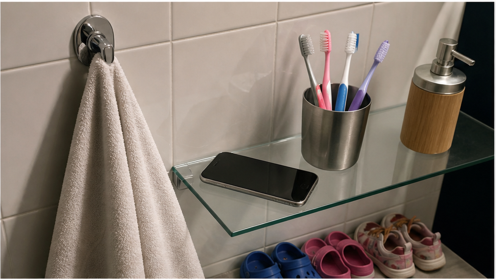
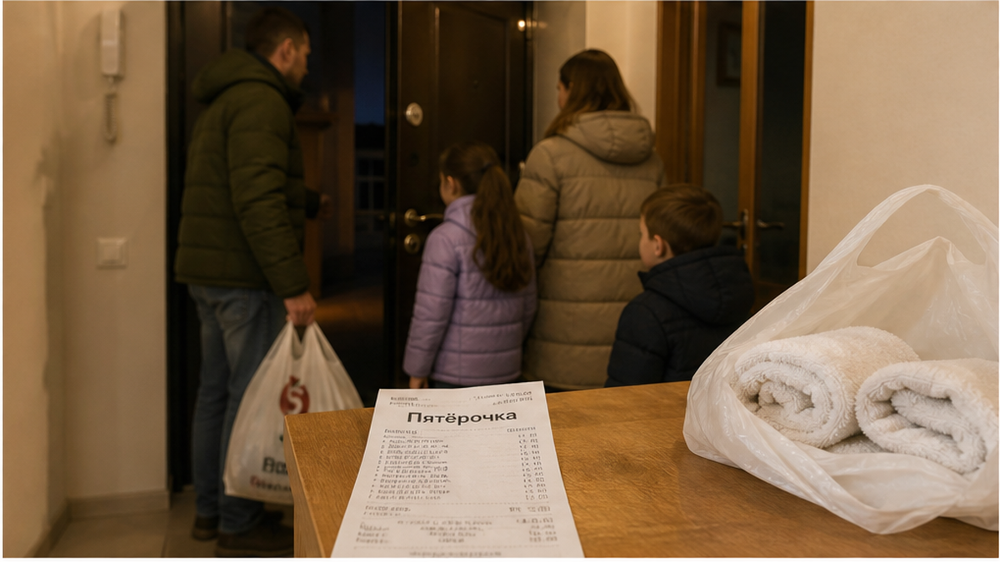
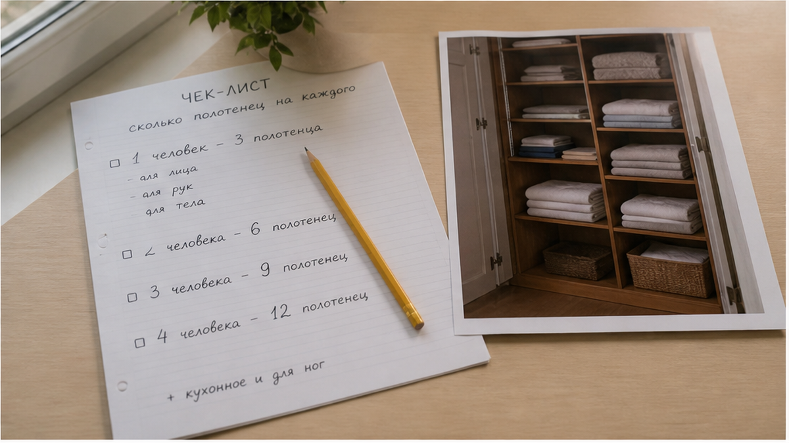

«Полотенца есть. Всё как в объявлении» — так закончилась переписка перед заселением. А в ванной на крючке висело одно полотенце. Одно — на четверых. Семья приехала в Тюмень на две-три ночи: двое взрослых, двое детей, чемодан в коридоре, ребёнок уже стягивает носки и идёт в душ. В объявлении стояла галочка «полотенца, постельное бельё», и гость прочитал её нормально: комплект для каждого. На месте не оказалось ни дополнительных полотенец в шкафу, ни стопки на верхней полке, ни запасного набора в комоде.
Дальше начинается цена этой маленькой галочки. Магазин у дома, вечерняя касса, остатки на полке — на четверых выходит примерно 400–900 ₽. Это не один обязательный чек, а честная вилка: зависит от того, что в этот час осталось в «Пятёрочке» или «Магните». Может найтись четыре банных полотенца, а могут остаться два кухонных и одно с мультфильмом. Семья платит не только деньгами, но и временем, настроением и первой ночью в квартире. Иллюзия ломается здесь: гость думает, что галочка означает количество. На самом деле галочка означает только наличие. Полотенце в квартире есть. Одно.
Я хост посуточной в Тюмени. Это «Добрый дом». Пишу не для того, чтобы кого-то заклеймить, а чтобы вы не покупали полотенца ночью: Telegram · MAX.

Когда вы выбираете квартиру посуточно, список удобств читается как инвентарная ведомость. Написано «полотенца» — значит, лежат по числу гостей. Написано «постельное бельё» — значит, застелено на всех. Это нормальное ожидание: если в квартире будут жить четыре человека, вещей для ванной тоже должно быть четыре комплекта.
Но карточка объявления часто заполняется по другой логике. Там галочка означает: «этот пункт в квартире присутствует». Она не говорит «два полотенца на человека», не обещает четыре банных и четыре маленьких, не называет запас для детей. Просто фиксирует факт. Почти такая же история бывает с кухней: в кейсе про квартиру, где кухня есть, а три ночи приходится есть в кафе, формально обещание тоже выполнено. Только гостю от этой формальности не становится удобнее.
Переписка перед заселением обычно звучит так:
«Сколько полотенец в квартире?»
«Полотенца есть».
«Сколько именно? Нас четверо».
«Есть комплект».
На слове «комплект» и расходятся два словаря. Для гостя комплект — это хотя бы банное и маленькое полотенце на каждого. Для объявления комплектом может оказаться один набор на квартиру. Вроде бы никто не произнёс прямую ложь, но платить за разницу приходится тому, кто стоит в ванной с чемоданом.

Единого правила, по которому все хосты считают полотенца, нет. У одних на гостя приходится два: банное и маленькое. У других лежит четыре полотенца на двоих — «должно хватить». Где-то базовый набор один, а дополнительный предлагают за 200–500 ₽. Бывает и проще: полотенца стираются между заездами, и запасной комплект не успел вернуться в шкаф.
Любой вариант можно назвать заранее. Проблема начинается, когда число выясняется после оплаты. Вы приезжаете на две-три ночи, дети хотят в душ, а вместо отдыха появляется поездка за покупками. 400–900 ₽ — это стоимость экстренного решения на четверых, если покупать то, что есть в ближайшем магазине. И ассортимент в этот вечер никто не гарантирует.
Похожая подмена цифр случается и в другой ситуации: в истории о доплате за третьего гостя у двери сумма в брони и ожидание на месте тоже оказались разными. Пока вы смотрите объявление, расхождение кажется мелочью. Когда стоите на пороге, спорить уже поздно.
Отзывы здесь тоже не всегда помогают. Гости пишут про район, чистоту и удобную кровать, а содержимое ванной полки редко попадает в текст. Рейтинг может выглядеть убедительно, хотя бытовые детали никто не проверял — об этом есть отдельная история про рейтинг 4,8 и два одинаковых «всё супер».
А вы бы что сделали, оказавшись в такой ванной: поехали бы ночью в магазин или потребовали от хоста довезти комплекты? Напишите в Telegram или MAX. Я отвечу лично: интересно, где у гостей проходит граница между «неприятно» и «так заселяться нельзя».

Один кейс — один вывод. Сначала проверьте количество полотенец, потом переводите деньги. Не наоборот. После оплаты у вас остаётся не рычаг, а выбор: терпеть, спорить или идти в магазин. Требование «доложите ещё три» уже сталкивается с чужим пониманием того, что именно входило в объявление. Так же спорно бывает с залогом: в истории о залоге, который отказались вернуть на выезде, проблема началась уже после перевода.
Вопрос, который стоит задать до бронирования: «Сколько полотенец в шкафу? Нас четверо — это четыре банных и четыре маленьких?» Ответ «есть комплект» не подходит. Нужны число и, лучше, фотография. Если хост не может назвать количество в своей квартире, считать придётся вам — ночью, у полки с уценёнными полотенцами.
У меня правило простое: если гость спрашивает число, он получает число и фото. Иначе так не заселяем.
В «Добром доме» можно спросить количество полотенец до перевода — менеджер ответит цифрой и фото. Напишите в Telegram или MAX, свяжитесь с менеджером, выберите квартиру на сайте или оформите бронирование. Телефон: +7 (993) 574-83-22.